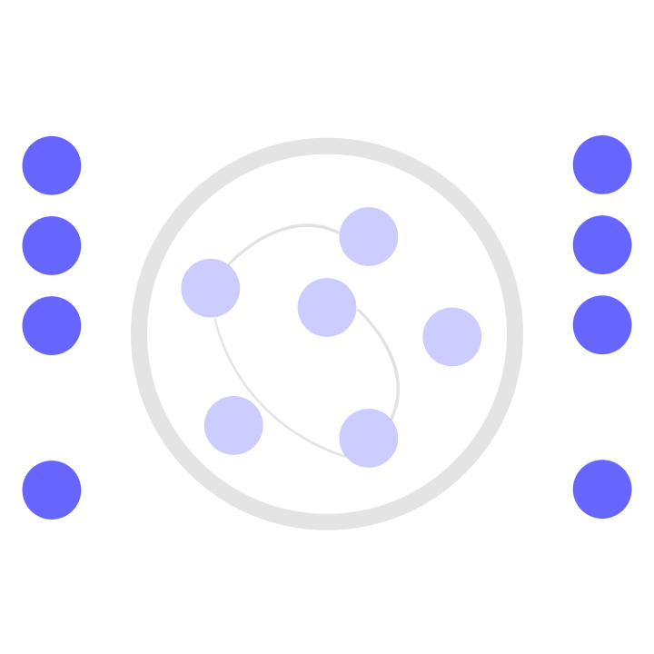

Reservoir Computing
Reservoir computing (RC) architectures that predict time-varying uncertainties in complex dynamical systems. By exploiting the computational efficiency of RC, we aim to predict unknown behaviors in dynamic environments.
Project details